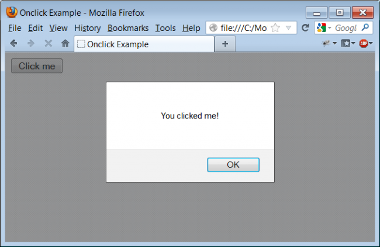
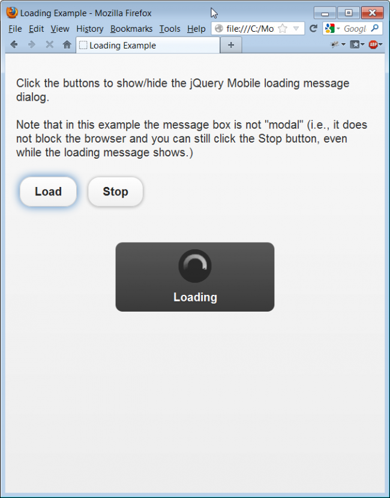
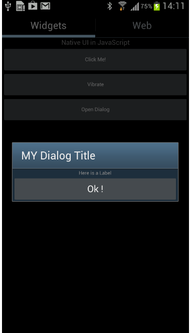

Letting your users know how things are progressing is a vital aspect of an app's usability. Users hate it when an app "just goes quiet" on them. Has the app crashed? Is there something they must do? Should they just wait? In this JavaScript beginner's tutorial we are going to take a look at some of the ways you can let your user know what's going on.
Changes to your main application screens will most likely provide the bulk of the feedback from you app to your user. Changes to screen elements, like the colour and content of widgets are great ways to signal changes to an application's status. Prompts and messages boxes can pop-up if something important happens or data needs to be entered.
In addition, you may choose to provide your users with auditory and tactile cues, or send notifications and emails to let the user know something has happened or needs to be done. A brief list of the possible ways you might interact with the user in just a simple app might look like this:
Buttons and fields
Prompts
Beeps and buzzes
Notifications
Surprisingly, many of these basic things don't work out-of-the-box with JavaScript implementations on mobile platforms. Often you will need to find a workaround. Let's take a look at some simple implementations of these interactive methods, focusing on alerts and prompts, and take a look at some of the basic options you have when deciding how to implement them in JavaScript.
JavaScript is an event-driven language. Pretty much nothing happens in your JavaScript code until some event triggers the interpretation of a portion of the code. A typical trigger is the click of a graphical button on the screen.
The HTML button tag provides us with a very simple mechanism for triggering JavaScript code from the onclick event:
<button onclick="myFunction()">Click me</button>
When this button is clicked, the JavaScript function myFunction gets called. Here is a very simple implementation:
<!DOCTYPE html>
<html>
<head>
<meta http-equiv="Content-type" content="text/html; charset=utf-8">
<title>Basic Onclick Example</title>
<script type="text/javascript">
function myFunction(){
alert("You clicked me!")
}
</script>
</head>
<body>
<button onclick="myFunction()">Click me</button>
</body>
</html>
Try loading this HTML page in your favourite desktop browser. You should see:

In the HTML code above we made use of the alert() function as a simple method of giving our user feedback. Even as a beginner to JavaScript you may wondering why we are bothering to show you something so completely trivial. The reason is simple: try loading this page in a browser on your Windows Phone 7 smartphone.
Surprise, surprise, it doesn't work!
That's because common JavaScript browser-blocking functions like alert() and confirm() aren't supported on the Windows Phone 7 platform. There are ways to pop-up message boxes on Windows Phone 7, but the JavaScript alert() function isn't one of them. Straight away we have hit upon the problem that the MoSync application framework is designed to solve: how to build apps that are truly "cross-platform" without writing a whole lot of conditional code.
If you are developing your app in the MoSync SDK or MoSync Reload, the MoSync Wormhole JavaScript Library automatically takes care of the lack of alert() support on Windows Phone 7 for you, by catching any call to that function and replacing it with a generic notification message box. More on this later.
If you want to get fancy with cross-platform dialog boxes in your app there is an easy solution: call on outside help. There are many pre-written JavaScript libraries out there that can do the work for you. One of the most popular libraries is jQuery and its add-on for mobile platforms jQuery Mobile. To add such libraries, download them, store them with your project and simply include them through script references in your HTML page like this:
<!-- Include the jQuery Framework (see http://jquery.com/)--> <script type="text/javascript" src="js/jquery-1.7.1.min.js"></script> <!-- Include the jQuery Mobile Framework (see http://jquery.com/)--> <script type="text/javascript" src="js/jquery.mobile-1.1.0.min.js"></script>
jQuery with jQuery Mobile provides many useful tools for building JavaScript user interface elements, including a variety of message boxes. The implementation is a little more complicated that the alert box we saw above. jQuery Mobile uses <div> tags and HTML5 data- attributes to allow for markup-based initialization and for the configuration of widgets.
In the following example we give a simple example of a loading message implemented through the jQuery Mobile framework:
<!DOCTYPE html>
<html>
<head>
<meta http-equiv="Content-type" content="text/html; charset=utf-8">
<title>Loading Example</title>
<!-- Link to the jQuery Mobile Framework stylesheet -->
<link rel="stylesheet" href="css/jquery.mobile.min.css" />
<!-- Include the jQuery Framework (see http://jquery.com/) -->
<script src="js/jquery.min.js"></script>
<!-- Override the jQuery Mobile text visibility config setting
for loading message boxes, otherwise we won't see it. (Such
configuration has to be done before loading the jQuery Mobile
framework.) -->
<script>
$(document).bind("mobileinit", function(){
$.mobile.loadingMessageTextVisible = true;
});
</script>
<!-- Include the jQuery Mobile Framework (see http://jquery.com/) -->
<script src="js/jquery.mobile.min.js"></script>
</head>
<body>
<!-- jQuery Mobile uses <div> tags and HTML5 data- attributes
to allow for markup-based initialization and the configuration
of widgets. -->
<div data-role="page">
<script>
$(document).on("click", ".show-loading-msg", function() {
$.mobile.showPageLoadingMsg('a', 'Loading', false);
})
.on("click", ".hide-loading-msg", function() {
$.mobile.hidePageLoadingMsg();
});
</script>
<div data-role="content">
<p>Click the buttons to show/hide the loading message dialog.
<br /> <br /> Note that in this example the message box is not "modal"
(i.e., it does <br />not block the browser and you can still click the
Stop button, even while the loading message shows.)</p>
<button class="show-loading-msg" data-inline="true">Load</button>
<button class="hide-loading-msg" data-inline="true">Stop</button>
</div>
</div>
</body>
</html>
If you have the needed local files, loading this HTML5 page in a browser and clicking the Load button will give you this result, with a pretty spinning loading icon:

Third-party libraries like jQuery and jQuery Mobile work well with MoSync's own JavaScript libraries, and you should have no problem mixing them together in the same app. There are a few limitations, however, and that's that your user interface components are going to look the same on all platforms, and may be different from the UI elements that the user expects to see on his native platform.
So what do you do if you want each user to see user interface elements that look the same as for other apps on his or her device? The MoSync Wormhole JavaScript Library has within it an API that provides dialog box functionality that works across all supported platforms (Android, iOS, Windows Phone, etc). Wormhole's NativeUI JavaScript API provides widgets that adapt themselves for each of the different platforms, so that users get the native look-and-feel they expect.
To use this API's functions you need to include the Wormhole library in your HTML code, just like you would for any other third party library:
<!-- Include the MoSync Wormhole Library --> <script type="text/javascript" charset="utf-8" src="js/wormhole.js"></script>
If you create your app using one of the MoSync SDK's HTML5/JS templates, all the necessary scripts for Wormhole and NativeUI and the underlying layers are included in your project.
Using the NativeUI API, you can create custom dialog boxes using the ModalDialog widget type. Here is an example of the HTML markup you need:
<div class="pane" id="heading">Customized Wormhole Technology</div> <div id="NativeUI"> <!-- the element with id="mainScreen" is loaded to the device screen by default --> <div data-widgetType="ModalDialog" id="myDialog" data-title="MY Dialog Title"> <div data-widgetType="VerticalLayout" id="mainLayout" data-width="FILL_AVAILABLE_SPACE" data-height="FILL_AVAILABLE_SPACE"> <div data-widgetType="Label" id="myLabel" data-width="FILL_AVAILABLE_SPACE" data-text="Here is a Label" data-fontSize="19"></div> <div data-widgetType="Button" id="myButton" data-width="100%" data-text="Ok !" data-onevent="doSomething();"></div> </div> </div> </div>
To access this dialog box from JavaScript, you create an object that contains it, Then you can show it.
<!-- Create my dialog as an object --> var myDialog = document.getNativeElementById(“myDialog”) <!-- Show my dialog --> myDialog.showDialog();
Here is a complete implementation, based on the NativeUI Template that comes with MoSync Reload:
<!DOCTYPE html>
<!--
* @file index.html
*
* Template application that provides Native UI functionality in
* HTML5 and JavaScript.
-->
<html>
<head>
<meta http-equiv="Content-type" content="text/html; charset=utf-8">
<script type="text/javascript" charset="utf-8" src="js/wormhole.js"></script>
<script type="text/javascript">
/**
* Called by the NativeUI library when the UI is ready to
* be shown. Show the main screen here.
*
* Here we illustrate how to add events to widgets and how to
* create widgets from JavaScript code.
*/
mosync.nativeui.UIReady = function()
{
// First get the screen we want to show.
var mainScreen = document.getNativeElementById("mainScreen");
// Show the screen.
mainScreen.show();
// Get an instance of the vibrate button created in the markup.
var vibrateButton = document.getNativeElementById("vibrateButton");
// Add an event listener to it. This is an alternative to
// specify a function name in the markup.
vibrateButton.addEventListener("Clicked", function()
{
navigator.notification.vibrate(1000);
});
// Create a button in JavaScript.
var helloButton = mosync.nativeui.create("Button", "helloButton",
{
// Declarative way of setting properties.
"width": "FILL_AVAILABLE_SPACE",
"text": "Open Dialog"
});
// Here is how to set properties in code.
helloButton.setProperty("fontSize", "20");
// Setting the clicked function.
helloButton.addEventListener("Clicked", function()
{
myFunction();
});
// Add button to layout.
helloButton.addTo("mainLayout");
}
/**
* Number of clicks on counterButton.
*/
var clickCounter = 0;
/**
* Called when counterButton is clicked.
*/
function counterButtonClicked()
{
var label = document.getNativeElementById("textLabel");
++clickCounter;
label.setProperty("text", "No. of clicks: " + clickCounter);
}
function myFunction()
{
var myDialog = document.getNativeElementById("myDialog");
myDialog.showDialog();
}
// Register event listeners.
// The "deviceready" event is sent when the system
// has finished loading. Here we initialise the UI.
document.addEventListener(
"deviceready",
function()
{
// Will call mosync.nativeui.UIReady when
// all Native UI widgets have been created.
mosync.nativeui.initUI();
},
true);
// Close the application when the back key is pressed.
document.addEventListener(
"backbutton",
function()
{
mosync.app.exit();
},
true);
</script>
</head>
<body>
<!-- All of the mosync.nativeui widgets should be wrapped inside a
tag with id="NativeUI" -->
<div id="NativeUI">
<div data-widgetType="ModalDialog" id="myDialog" data-title="MY Dialog Title">
<div data-widgetType="VerticalLayout" id="mainDialogLayout" data-width="FILL_AVAILABLE_SPACE" data-height="FILL_AVAILABLE_SPACE">
<div data-widgetType="Label" id="SecondLabel" data-width="FILL_AVAILABLE_SPACE" data-text="Here is a Label" data-fontSize="19"></div>
<div data-widgetType="Button" id="SecondButton" data-width="100%" data-text="Ok !" data-onevent="doSomething();"></div>
</div>
</div>
<!-- The element with id="mainScreen" contains the main UI screen.
In this app the main screen has two tabs with screens. -->
<div data-widgetType="TabScreen" id="mainScreen">
<!-- First Screen -->
<div data-widgetType="Screen"
id="widgetScreen"
data-title="Widgets"
data-icon_android="img/Android_TabIconDevice.png"
data-icon_iOS="img/IOS_TabIconDevice.png">
<div data-widgetType="VerticalLayout"
id="mainLayout"
data-width="FILL_AVAILABLE_SPACE"
data-height="FILL_AVAILABLE_SPACE">
<div widgetType="Label"
id="textLabel"
data-width="FILL_AVAILABLE_SPACE"
data-text="Native UI in JavaScript"
data-fontSize="26">
</div>
<div data-widgetType="Button"
id="counterButton"
data-width="FILL_AVAILABLE_SPACE"
data-text="Click Me!"
data-fontSize="20"
data-onevent="counterButtonClicked()">
</div>
<div data-widgetType="Button"
id="vibrateButton"
data-width="FILL_AVAILABLE_SPACE"
data-text="Vibrate"
data-fontSize="20">
</div>
</div>
</div>
<!-- Second Screen -->
<div data-widgetType="Screen"
data-id="webScreen"
data-title="Web"
data-icon_android="img/Android_TabIconWebView.png"
data-icon_iOS="img/IOS_TabIconWebView.png">
<div data-widgetType="WebView"
id="webBrowser"
data-width="FILL_AVAILABLE_SPACE"
data-height="FILL_AVAILABLE_SPACE"
data-url="http://www.google.com">
</div>
</div>
</div>
</div>
</body>
</html>
If you create this project and run it on a mobile device, you will see a native modal dialog box appear when you click the button:

We suggest you create this project in MoSync Reload, and then run it on other mobile device platforms, like iOS and WIndows Phone. On those devices you will see the platform's native equivalent of a modal dialog box. Try it!